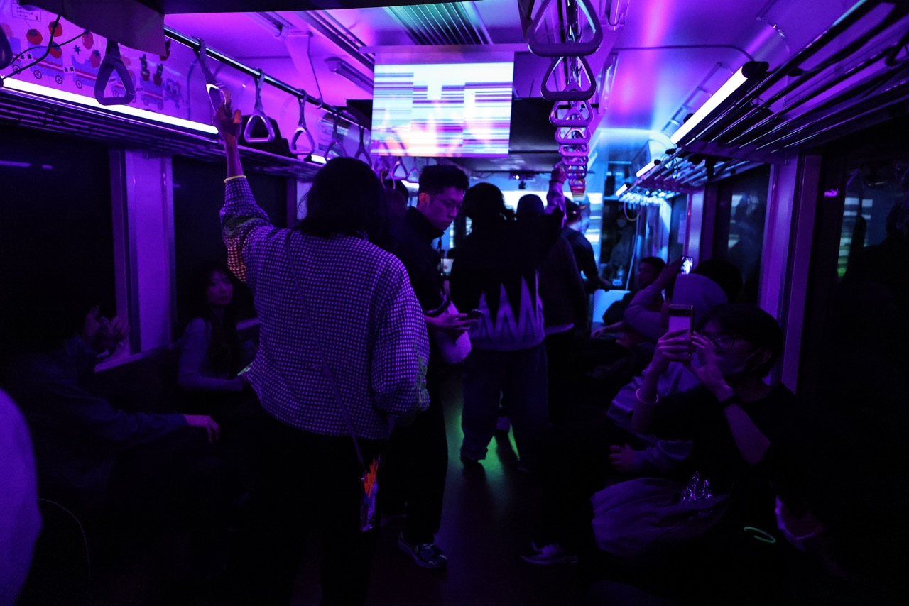

About
主催：NxPC.Lab

NxPC.Labは、クラブやライブにおけるアーティストと観客の相互作用によってもたらされる場の臨場感を拡大し、ネットへも拡散させるためのメディアテクノロジーの実現を目指した研究機関です。
現代のメディア体験において必要とされる対話性、参加性をデバイス、インタフェース、ネットワークといったメディアテクノロジーを駆使することで、音楽体験を拡張し、音楽空間におけるコミュニケーションを次のステージへ導くための研究開発、イベントを実施しています。実験の場としてのイベントNxPC.Liveを中心に、レクチャーやワークショップ、ネットラジオなどの活動を行っています。
Info
『25%減塩』
NxPC.Live vol.61
Schedule
| Date | 2023.2.25 Sat. |
|---|---|
| Open | 17:00 |
| Start | 17:00~ |
| Close | 20:30 |
Live Streaming
Timetable
| 2 / 25 | Performer |
|---|---|
| 17:00~ | スパム大垣 |
| 17:40~ | Ryu Ishizuka |
| 18:10~ | 作業用BGM |
| 18:50~ | やまもりの塩澄 |
| 19:30~ | JACKSON kaki |
| 20:00~ | GUEST |
| 20:30 | Close |
Performers
スパム大垣
電車男の頃の伊東美咲が好きです。
Ryu Ishizuka
Talkboxという80'sに流行したエフェクターを用いて、チューブを口にくわえてシンセサイザーの音を送り、 口の中で共鳴させて人間の声のように発声する演奏法と、音に同期した映像による視覚表現を合わせることで、 新旧を織り交ぜたパフォーマンスを行う。
作業用BGM
作業用BGMを演奏するグループ 作業 (さぎょう、英語: occupation) とは、日々の生活で行われ、名付けられている一群の活動と課題であり、個人と文化によって価値と意味があたえられたものである。 作業として音楽の演奏を行う。 今回はディスプレイをパンチして演奏します！
やまもりの塩澄
Comming soon...
JACKSON kaki
3DCG / VR,AR / Video Creator based in Tokyo , JAPAN and also he is DJ plays in Shibuya. Influenced by the culture of alternative electronic music (IDM / Experimental / Avant-garde / UK Bass), he focuses on the extended expression of music through new media such as 3DCG / VR/AR.
GUEST
Comming soon...